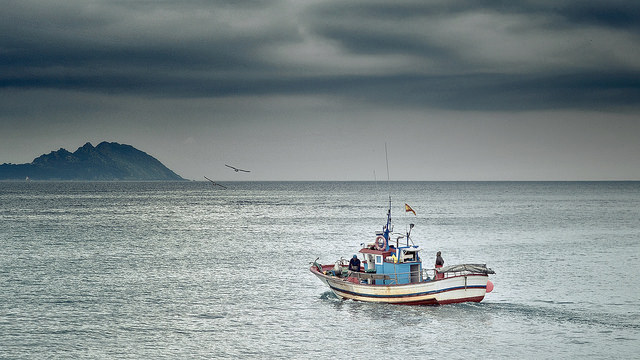

Poucas veces escribín con tanta tristeza, hoxe, pra finalizar con este 2016 vou documentar o fracaso de levar a cabo o MediaLab A industriosa, un proxecto no que empecei a traballar aos inicios do ano, pra así promover unha necesidade que ten a cidade, ademais de facer e ese necesario homenaxe a Sanjurjo Badía. Este proxecto, esta documentado na seguinte presentación:
Cando expuxemos este proxecto, tiñamos pensando arranxar os seguintes problemas:
- Os universitarios terían un espazo onde coñecer xente que esta traballando en empresas de I+D locais. Estes poderían recibir consellos de xente que traballa, para así preparase mellor sobre as necesidades do futuro. Ao existir este fío condutor, moitas empresas contratarían directamente a xente que estivera presente no medialab.
- Os traballadores que teñan ideas terían un sitio onde encontrar validación ou posibles solucións, polo que se conseguirían promover sinerxias en diferentes proxectos nun nivel técnico. Como pasa en menor media cas meetups de Vigolabs.
- Sería un sitio de prototipado, polo que os asistentes a programas de aceleración de empresas poderían usalos. Sería un sitio perfecto pra facer xerminar produtos, cun custe so en tempo de traballo, non en ferramenta.
- O espazo é idóneo para proxectos como UVigo Motorsport, hackahtons, etc.. e facer unha vinculación activa entre proxectos lúdicos e a empresa. Proxectos que teñen unha gran repercusión noutros países, e aquí case non se aprecia o gran potencial que teñen.
- Sería a porta de entrada pra que a industria do mar, viñera e propuxera proxectos ou ideas a un sector tecnolóxico. Como xa pasou no Hackathon Sanjurjo Badía.
As bases económicas deste proxecto son relativamente grandes para un traballador, pero relativamente pequenas para as administracións, sendo o custo o seguinte:
- Laborais: serían un traballador, cun custo total en torno aos 35.000€. Esta persoa encargaríase dos socios, mantemento, promoción e abrir o espazo.
- Espazo electrónica: Isto suporía en torno aos 5000€, debido a que o material é mínimo.
- Espazo prototipado: Isto sería un dos mais custosos, 8000€. Que constaría dun par de impresoras 3D, cortadora laser, etc..
- Espazo madeira/fibra: pantoroutes, fresadoras, etc.. Isto serían en torno aos 5000€.
- Espazo matricería: Torno e fresadoras manuais pra facer pequenas cousas en ferro. Isto supón un custo en torno aos 9.000€, pero podería comprarse no segundo ano ou conseguir algunha doazón de segunda man.
- Espazo eventos: Cadeiras, mesas, proxector, estantes, iluminación etc.. isto suporía uns 4.000€
- Temas legais: Asesoría, Avogados, prevención de riscos laborais, extintores, etc.. isto sería o mais compricado, 10000€
- Espazo e gastos correntes: Sen definir o espazo é compricado poder dar unha cifra sobre isto.
Contando, que moita xente, axudaría e abriría en horas non laborais. O espazo tería unha vida propia por moita xente da comunidade ao mais puro estilo asociación veciñal. En canto ao presuposto, e grande no inicio, pero reduciríase aos 80.000 euros anuais a partir do segundo ano(Laboral/Legais/Gastos correntes). Sendo un presuposto minúsculo en relación cos presupostos das administracións localizadas en Vigo: Concello(230M€), Zona Franca (55M€), Autoridade Portuaria (25M€), Deputación de Pontevedra (150M), Eixo Atlántico (3M€), Xunta (9.000M€)

O espazo, que fala de aceleradoras, falase das existentes. En canto a empresa tractoras, eu ofrecín os meus contactos, entre os que estaban: Intel, IBM, Udoo, Rolls&Royce, ademais de moitas empresas locais que querían ser padriños deste espazo.
O proxecto presentouse no Concello de Vigo inmediatamente despois do Hackathon Sanjurjo Badía. E presentouse en Zona Franca a inicios de Outubro. Ambas administracións, en maior ou menor media, amosaron a súa implicación no proxecto, polo menos escoitaron, o que xa significaba un triunfo.
Ca Autoridade portuaria de Vigo por desgraza, en ano e medio, non conseguimos ter unha reunión con eles. Intentamos contactar con eles antes da Hackathon Sanjurjo Badía, sendo imposible. Despois desta, foi imposible cadrar axenda para ter unha reunión. Debido a nula comunicación, temos que matar o proxecto. Non ten sentido facer un proxecto de Vigo cidade tecnolóxica do mar, sen a colaboración do Porto. Ademais nunca conseguimos, que se falara dun proxecto en conxunto das administracións, pra fomentar isto como marca de Vigo/Galicia.
Por desgraza no Gran Vigo somos soamente 600.000 persoas, Galicia ten menos de 3 millóns. É incrible que esteamos pelexados sur con norte, azuis con roxos, fulanito con venganito, somos catro gatos e inda por riba non podemos poñer as raíces para un proxecto de futuro. Se de verdade queremos que os nosos fillos poidan vivir aquí teremos que entendernos, se non pasará como con pobos como Mondariz ou Tui, que de ser grandes pobos fai un par de séculos, hoxe en día quedaron reducidos a pequenos concellos. A globalización viu pra quedarse, e vives con ela, ou cómete. Vigo e Galicia, dende o meu punto de vista, vai ser comida, poñendo como exemplo a Detroit.
Para mais INRI, o porto de Rotterdam, a través dun patrocinador da Hackathon, mirou en internet o resultado da Hackathon Sanjurjo Badía. A raíz de un par de correos eles ofrecéronnos traballo para incorporarnos no seu proxecto de promoción de empresas tecnolóxicas do mar. Temos envexa, que a Autoridade Portuaria de Rotterdam leva cinco edicións da súa Hackathon, chamada World, pelexando co Mundo, non con Marín ou Leixoes, e repartindo premios de 15.000€ aos asistentes. Mentres que a propia Autoridade portuaria dotou o seu MediaLab das últimas novidades de Impresión 3D en metal. É unha pena que estas iniciativas en Vigo teñan que vir da man de persoas alleas ao entorno marítimo, e que teñan que apostar o seu tempo e cartos en facer algo que debería facer a administración pública.
Todo parece indicar que o futuro de Vigo é un destino turístico. Acabando con todo iso que nos gustaba os de aquí, ir a praia e poder respirar, ver as noticias de grandes barcos construídos, ou ir ao centro de Vigo e poder non sentirte un guiri. Moitos galegos escapamos da vida onde hai turistas, e Galicia estase convertendo nunha fulana barata do turismo, e como consecuencia, perdendo parte do seu encanto.
Darlle, dende aquí, os meus parabéns aos proxectos de Matadoiro (Compostela) e CoLab(A Coruña), ambos proxectos de aprendizaxe aberto cun gran recorrido en ambas cidades. Tamén recordarlle que o realmente importante é buscarlle contexto local a eses espazos, e servir de utilidade a economía local, para que esta poda tirar do espazo. Un sitio onde se xeran ideas de casa intelixente non é sitio do que as economías locais poidan tirar, o contexto nestes espazos é todo.
Este artigo non significa unha despedida, significa que Vigolabs, vai dar un bandazo, que non pivotar, adicándose mais a electrónica e facendo mais tecnoloxía pura, sen estar enfocada ao mar. Abrindo o abanico de empresas que non sexan puramente marítimas e enfocarse mais o entorno industrial, automoción, e o mundo Maker, para así, ser de utilidade as empresas locais.
Tamén teño que facer autocrítica. Sei que fixen moitas cousas mal. Esa presentación chegou tarde (Xuño), o que eu ofrecía era algo moi innovador nunha sociedade pouco innovadora, estou seguro, que se o medialab fora enfocado a automoción tería moita mais tracción a curto prazo. Un dos errores mais grandes foi que ese presentación non poñía onde cazar diñeiro de subvencións europeas, algo que por desgraza era necesario. Ademais o meu artigo sobre empresas tecnolóxicas marítimas tiña que ser a base de traballo, e non a última rabexada da morte do proxecto.
Finalizo así, un ano nefasto, que non conseguín levar a cabo un proxecto dos que mais ilusión me fixo na miña vida. E moita xente terá envexa do que conseguín, este ano puiden coñecer a Bruce Springsteen, gozar dun test privado co 4 veces campión do mundo de rallyes, estar presente na inauguración da expo de 50 anos de Volkswagen en competición en Berlin, ademais de varios éxitos profesionais. Pero non conseguín que xente da cidade escoitara, o que para min era o mais importante. Ademais, tamén levou a desilusión a un grupo de excelentes enxeñeiros, que con isto, tamén estaban ilusionados. Eles miraron que fallei, pedirlle as miñas desculpas a todos eles.
Este post recórdame que meu apelido é Coto, que son a cuarta xeración que emigra. En 1927, no Barco Almanzora, meu bisavó despediuse dende o peirao de Vigo dirección Bos Aires. Meus avós acabaron en Amsterdam, meu pai volveu despois de 20 anos. O 1 de Setembro do 2012 quedaron a chorar no aeroporto por ver marchar o seu fillo. Este o 2016, foi o primeiro ano que mirei a miña avoa dúas veces no mesmo ano, fíxome recordar que a emigración estragoume parte da miña infancia. O nadal, pra min, xa non é estar ca familia, e estar cos amigos que volven. Así de triste é a sociedade que lle deixamos aos futuros rapaces galegos.
Eu mentres seguirei collendo avións, e recordando, que en Galicia somos incapaces de ver vinte metros mais aló, que seguimos sen coñecer a nosa historia. Entrementres seguiremos discutindo que o marco moveuse dous centímetros, fraternité que din os franceses.
Feliz ano novo.
Comments: